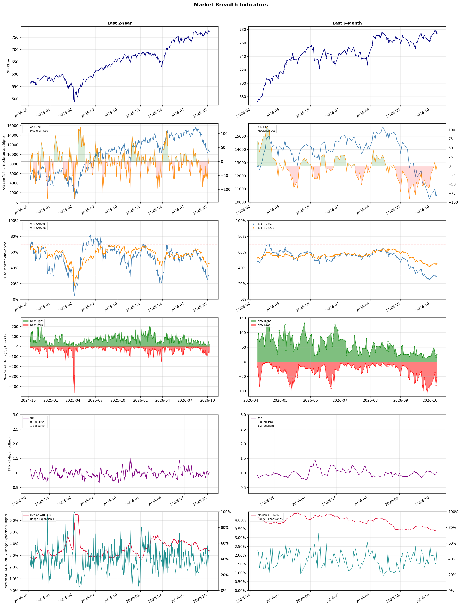

A daily market breadth and sector rotation report for active investors
| Item | Read |
|---|---|
| Regime | Defensive |
| Risk posture | Defensive |
| Universe | 1,315 stocks tracked · 25 new 52-week highs · 30 active swing setups |
| Breadth | only 29.7% of tracked stocks are above SMA50, new lows exceed new highs (54 vs 25) |
| Leadership | Oil & Gas Refining & Marketing, Health Information Services, and Diagnostics & Research |
| Weakest groups | Uranium, REIT - Mortgage, and Resorts & Casinos |
Use this report to prioritize research and chart review; validate entries, stops, liquidity, earnings, and risk before acting.
| Item | Read |
|---|---|
| Primary read | Defensive regime with Defensive risk posture. |
| Research queue | MPC, PBF, VLO, DINO, CSAN |
| Leadership focus | Oil & Gas Refining & Marketing, Health Information Services, and Diagnostics & Research |
| Caution list | Uranium, REIT - Mortgage, and Resorts & Casinos |
| Review prompt | Check extension risk, chart location, fundamentals, valuation, and earnings before using any research row. |
| Item | Read |
|---|---|
| Primary read | 3 active risk warnings; use screen output as watchlist input only. |
| Bullish screens | DINO, MPC, PBF, MQ, DHT |
| Bearish screens | RZLV, SOUN, WRD, BIDU, BBAI |
| Alerts / levels | Automated trigger, stop, ATR, liquidity, reward/risk, and event-risk levels are pending future enrichment. |
| Review prompt | Open the linked chart, define trigger and invalidation, then check liquidity and event risk independently. |
Risk Posture: Defensive — screen backdrop favors caution; require independent risk review before new exposure
Metric context: McClellan below -50 = elevated selling pressure; below -100 = washout territory. Range Expansion = share of stocks with daily range above their 20-day average. Signal Density = share of tracked names appearing in signal screens.
| Breadth Date | % > SMA50 | % > SMA200 | New Highs | New Lows | McClellan | Median Range | Avg Range | Median ATR14 | Range Expansion | Signal Density |
|---|---|---|---|---|---|---|---|---|---|---|
| 2026-10-08 | 29.7% | 45.3% | 25 | 54 | 2.4 | 3.2% | 3.7% | 3.4% | 51.6% | 8.5% |

Prior comparison date: October 7, 2026
| Metric | Prior | Current | Change |
|---|---|---|---|
| Regime | Defensive | Defensive | unchanged |
| Risk Posture | Defensive | Defensive | unchanged |
| % > SMA50 | 28.7% | 29.7% | +1.0 pts |
| % > SMA200 | 44.2% | 45.3% | +1.2 pts |
| New Highs | 15 | 25 | +10 |
| New Lows | 81 | 54 | +27 |
Top-10 industries entering: Discount Stores, Household & Personal Products, Oil & Gas Integrated, and Software - Application. Top-10 industries leaving: Computer Hardware, Electronic Components, Scientific & Technical Instruments, and Semiconductor Equipment & Materials. New multi-signal long setups: BEKE, DHT, DINO, FRO. New multi-signal short setups: ACAD, BBAI, BIDU, BUR, CWH, LKQ.
| Status | Tickers | Read |
|---|---|---|
| Added | ACAD, BB, BBAI, BEKE, BIDU, BUR, CWH, DHT | New technical screen matches vs prior report. |
| Removed | ABBV, AKR, AMAT, ANET, ARDX, BSX, CG, CPB | No longer present in today's technical screen matches. |
| Still Active | ALAB, ARM, FER, JBLU, SDGR, TEM, TWST | Appeared in both current and prior reports. |
| Promoted | none | Model Screen Score improved by at least 15 points. |
| Downgraded | none | Model Screen Score declined by at least 15 points. |
| Direction | Industry | ETF | Prior Rank | Current Rank | Days | Rank Change |
|---|---|---|---|---|---|---|
| Rose | Semiconductor Equipment & Materials | SOXX | 80 | 14 | 35 | +66 |
| Rose | Semiconductors | SOXX | 69 | 10 | 35 | +59 |
| Rose | Electronic Components | XLK | 77 | 20 | 35 | +57 |
| Rose | Apparel Manufacturing | N/A | 81 | 26 | 28 | +55 |
| Rose | Discount Stores | XRT | 59 | 5 | 42 | +54 |
Bull: The Semiconductor Equipment & Materials sector is experiencing a bullish trend due to a notable shift in investor sentiment, as highlighted by recent headlines indicating a rally in materials and equipment stocks alongside memory chips. This surge is driven by strong demand for semiconductor manufacturing equipment, evidenced by significant stock price increases for key players like Lam Research and Applied Materials, which reflects optimism about ongoing technological advancements and increased production capacity in the semiconductor industry. Additionally, the broader market's recognition of the sector's resilience, even in the face of challenges such as the recent decline in Applied Materials' stock, suggests a robust long-term outlook for semiconductor equipment and materials.
Bear: While the recent rally in semiconductor equipment and materials stocks may suggest bullish sentiment, it is crucial to recognize that this sector is highly cyclical and sensitive to macroeconomic factors. The significant drop in Applied Materials' stock following the Broadcom news indicates underlying vulnerabilities and potential overvaluation, raising concerns about the sustainability of this rally amidst ongoing supply chain challenges and geopolitical tensions that could dampen future demand. Moreover, the current enthusiasm may be driven more by short-term trading dynamics rather than solid fundamentals, making the sector susceptible to a sharp correction.
Verdict: The Semiconductor Equipment & Materials sector's bullish trend is primarily driven by robust demand for manufacturing equipment, fueled by ongoing technological advancements and increased production capacity in the semiconductor industry. However, investors should remain cautious of the cyclical nature of this sector and the risk of overvaluation, particularly in light of recent stock volatility and macroeconomic challenges that could impact future demand. It is advisable to monitor geopolitical developments and supply chain stability closely, as these factors could trigger a significant market correction.
Sources: Google News
Bull: The semiconductor industry is experiencing a bullish trend due to a combination of strong demand for chips across various sectors, particularly as technology continues to evolve and expand into areas like AI and IoT. Recent headlines indicate a rebound in semiconductor stocks following a sector selloff, with firms like Micron showing resilience and gaining over 4%, while analysts from BofA are identifying top semiconductor stocks to buy, signaling confidence in the sector's recovery and growth potential. Additionally, the acknowledgment of standout performers like Macom suggests that innovation and strategic positioning within the industry are driving upward momentum.
Bear: While the semiconductor industry may currently exhibit a rising relative-strength trend, this could be misleading given the cyclical nature of the sector and the potential for overcapacity as companies ramp up production to meet perceived demand. Recent gains in stocks like Micron may not reflect sustainable growth but rather a temporary bounce-back from prior declines, and the broader market's downward trend suggests that underlying economic conditions, such as inflation and supply chain disruptions, could pose significant headwinds that undermine long-term profitability in the industry. Furthermore, the hype around AI and IoT may not be enough to offset potential demand saturation and increased competition, leading to a more cautious outlook for the sector.
Verdict: The semiconductor industry's bullish trend is primarily driven by robust demand for chips fueled by advancements in technology, particularly in AI and IoT, alongside a rebound in stock performance following a prior selloff. However, investors should remain cautious of the cyclical nature of the sector and the risk of overcapacity, as increased production to meet perceived demand could lead to potential saturation and profitability challenges in the long term.
Sources: Google News
Bull: The Electronic Components sector is likely experiencing rising relative strength due to robust industry trends highlighted by the positive performance of key players like Amphenol, which was noted as the best in the business for Q2 earnings. Additionally, despite short-term volatility exemplified by TTM Technologies' recent drop, the overall demand for electronic components remains strong, driven by increasing adoption of technology across various sectors, as indicated by the focus on promising trends in manufacturing electronics. This resilience amidst sector-wide selling suggests a solid fundamental outlook for the industry.
Bear: While the bull thesis highlights strong performance from key players like Amphenol, it overlooks the broader market volatility and the significant drop in TTM Technologies' stock, which may indicate underlying weaknesses in the sector. Additionally, the increasing adoption of technology does not guarantee sustainable demand for all electronic components, especially as supply chain challenges and rising material costs could pressure margins and profitability for many companies in the industry. This suggests that the current relative strength may be more a function of selective performance rather than a robust, industry-wide recovery.
Verdict: The electronic components industry is experiencing rising relative strength primarily due to robust demand driven by technological advancements and strong performances from key players like Amphenol, which indicates a positive outlook for the sector. However, investors should remain cautious of potential risks, such as supply chain challenges and rising material costs, which could impact margins and profitability, particularly for companies like TTM Technologies that have recently faced significant stock declines. It is advisable to focus on companies with strong fundamentals and resilience to market volatility while monitoring broader economic indicators that could affect the industry's sustainability.
Sources: Google News
Bull: The Apparel Manufacturing sector is experiencing rising relative strength due to favorable industry trends highlighted in recent headlines, such as shifts in trade deals and sourcing strategies away from China, which are revitalizing the sector. Additionally, analysts are optimistic about the growth potential of specific textile-apparel stocks, as indicated by multiple articles identifying top investment opportunities for 2026, suggesting a robust recovery and increasing consumer demand in the apparel market. This combination of strategic industry shifts and positive market sentiment positions the sector for significant gains.
Bear: While the apparel manufacturing sector may currently exhibit rising relative strength, this optimism is potentially misplaced given the cyclical nature of consumer spending and the ongoing challenges of inflation and supply chain disruptions. Additionally, the shift away from China could lead to increased production costs and logistical complexities, which may erode profit margins and limit the anticipated growth. Furthermore, the articles promoting specific stocks may be overly optimistic, failing to account for the potential for market saturation and changing consumer preferences that could hinder long-term performance.
Verdict: The apparel manufacturing sector's rising relative strength is fundamentally driven by strategic shifts in trade and sourcing that are revitalizing growth potential, particularly as companies diversify away from China. However, a key risk lies in the cyclical nature of consumer spending and the potential for increased production costs and supply chain complexities, which could undermine profit margins and hinder long-term growth. Investors should remain cautious and closely monitor economic indicators and consumer trends to gauge the sustainability of this recovery.
Sources: Google News
Bull: The rising relative strength of discount stores can be attributed to a significant shift in consumer behavior towards value shopping, as highlighted by the Yahoo Finance article on discount retail stocks poised to win big. With inflationary pressures and economic uncertainty, consumers are increasingly seeking affordable options, driving sales and profitability for discount retailers. Additionally, the positive Q1 results from companies like Five Below indicate robust performance within the sector, further reinforcing the bullish outlook for discount stores in the current market environment.
Bear: While the rising relative strength of discount stores may seem promising, it's essential to consider that this trend could be a temporary reaction to inflationary pressures rather than a sustainable shift in consumer behavior. As economic conditions stabilize and inflation eases, consumers may revert to their previous spending habits, favoring quality and brand over price, which could negatively impact discount retailers. Furthermore, the strong Q1 results from companies like Five Below may not be indicative of long-term growth, as they could be benefiting from a one-time surge in demand rather than a lasting trend.
Verdict: The rising strength of discount stores is fundamentally driven by a significant shift in consumer behavior towards value shopping, fueled by inflationary pressures and economic uncertainty, which has led to increased sales and profitability in the sector. However, a key risk is that this trend may be temporary; as inflation stabilizes, consumers could revert to prioritizing quality and brand loyalty over price, potentially undermining the growth of discount retailers in the long term. Investors should monitor economic indicators closely to assess the sustainability of this shift in consumer behavior.
Sources: Google News
| Direction | Industry | ETF | Prior Rank | Current Rank | Days | Rank Change |
|---|---|---|---|---|---|---|
| Fell | Uranium | URA | 23 | 87 | 35 | -64 |
| Fell | Banks - Diversified | N/A | 10 | 65 | 35 | -55 |
| Fell | Agricultural Inputs | N/A | 5 | 59 | 28 | -54 |
| Fell | Other Industrial Metals & Mining | N/A | 32 | 82 | 42 | -50 |
| Fell | Gold | GDX | 3 | 52 | 42 | -49 |
Bear: While the bull analyst attributes the recent decline in uranium stocks to a sector correction and the performance disparity between producers and developers, this may overlook deeper structural issues within the uranium market. The ongoing volatility and investor caution could signal a broader lack of confidence in nuclear energy's long-term viability, exacerbated by regulatory uncertainties and competition from alternative energy sources. Additionally, the rise of companies like NuScale Power, despite dilution, may reflect speculative trading rather than genuine investor confidence, further indicating a precarious outlook for the sector as a whole.
Bull: The recent decline in the relative strength of uranium stocks can be attributed to a sector correction that has highlighted the disparity between profitable uranium producers and loss-making developers, as noted in the ChartMill headline. Additionally, the mixed performance of companies within the sector, such as NuScale Power's rise despite dilution, suggests volatility and investor caution, which may be contributing to the overall weakness in uranium equities. This environment, coupled with ongoing evaluations of uranium stocks and their long-term potential, indicates a transitional phase where investors are reassessing risk and profitability within the sector.
Verdict: The recent decline in uranium stocks is primarily driven by a sector correction that underscores the profitability gap between established uranium producers and struggling developers, leading to heightened investor caution. However, a key risk highlighted by the bear thesis is the potential long-term challenges facing nuclear energy, including regulatory uncertainties and competition from alternative energy sources, which could undermine confidence in the sector's future growth. Investors should closely monitor these structural issues while reassessing their positions in uranium equities.
Sources: Google News
Bear: While the bull analyst highlights selective opportunities within the diversified banking sector, the overall trend of falling relative strength suggests that the sector is grappling with systemic challenges rather than isolated performance issues. Rising interest rates and economic slowdowns are not just macroeconomic concerns but fundamental headwinds that could lead to increased loan defaults, reduced consumer spending, and tighter credit conditions, which would negatively impact banks' profitability across the board. Furthermore, the reliance on a few standout banks like JPMorgan Chase may mask broader vulnerabilities, indicating that the sector's cautious sentiment is warranted as the economic landscape remains uncertain.
Bull: The relative weakness in the diversified banking sector can be attributed to macroeconomic concerns, including rising interest rates and potential economic slowdowns, which may dampen loan demand and compress margins. Recent headlines, such as "The Best Bank Stocks to Buy" and "3 Top Financial Sector Stocks To Capture Big Bank Earnings Momentum," suggest a focus on selective opportunities rather than broad sector strength, indicating that while some banks like JPMorgan Chase may perform well, overall investor sentiment is cautious amid economic uncertainty. Additionally, the "Q2 Recap" on Truist Financial highlights specific bank performances, suggesting that not all institutions are benefiting equally from current market conditions, which can further weigh on sector relative strength.
Verdict: The diversified banking sector's declining relative strength is primarily driven by systemic challenges such as rising interest rates and potential economic slowdowns, which threaten profitability through increased loan defaults and tighter credit conditions. While selective opportunities exist within the sector, the reliance on a few strong performers like JPMorgan Chase may obscure broader vulnerabilities, making it crucial for investors to remain cautious and consider the risk of widespread sector weakness amid ongoing economic uncertainty.
Sources: Google News
Bear: While the bull analyst acknowledges the supply chain disruptions and fluctuating commodity prices, they underestimate the long-term structural challenges facing the Agricultural Inputs sector, such as increasing regulatory pressures on fertilizers and a shift towards sustainable farming practices that may reduce demand for traditional inputs. Additionally, the relative strength trend is falling, indicating that investor sentiment is not merely a temporary rotation but a more significant shift away from agricultural inputs as concerns over profitability and growth potential mount in the face of rising costs and supply shocks.
Bull: The Agricultural Inputs sector is experiencing a decline in relative strength primarily due to heightened concerns over fertilizer and energy supply shocks, as highlighted in the Webull article. This uncertainty is compounded by the broader economic context, where the materials sector is showing signs of a breakout, suggesting a rotation of investor interest away from agricultural inputs towards more economically sensitive materials, as noted in the Seeking Alpha report. Consequently, while some companies like Escorts Kubota and Coromandel International are recognized for their strong future roadmaps, the overall sector sentiment remains cautious amid supply chain disruptions and fluctuating commodity prices.
Verdict: The Agricultural Inputs sector is likely experiencing a decline due to a combination of rising costs, supply chain disruptions, and a shift towards sustainable farming practices that reduce reliance on traditional fertilizers. This trend is exacerbated by increasing regulatory pressures, which pose long-term challenges for profitability and growth. Investors should remain cautious and closely monitor these structural changes, as they could lead to sustained underperformance in the sector amidst shifting market dynamics.
Sources: Google News
Bear: While the bull analyst suggests that the relative weakness in the Other Industrial Metals & Mining sector presents a buying opportunity, this overlooks the fundamental challenges facing the industry, such as declining demand due to economic slowdowns and increased regulatory pressures on mining operations. Additionally, the focus on more lucrative segments like copper and rare earth elements indicates that investors are prioritizing growth and innovation, which may further entrench the Other Industrial Metals & Mining sector's underperformance and make it less attractive for capital allocation in the near term.
Bull: The relative weakness of the Other Industrial Metals & Mining sector can be attributed to a broader market focus on more lucrative segments, such as copper and rare earth elements, as highlighted by the recent articles from The Motley Fool discussing the best mining stocks for 2026 and the attention on USA Rare Earth, Inc. Additionally, the emphasis on specific metals like copper suggests that investor sentiment is shifting towards sectors perceived to have stronger growth potential, leaving the broader industrial metals space lagging behind. This trend indicates a potential mispricing in the Other Industrial Metals & Mining sector, presenting a buying opportunity for discerning investors.
Verdict: The Other Industrial Metals & Mining sector is experiencing a decline primarily due to shifting investor focus towards higher-growth segments like copper and rare earth elements, which are perceived as more lucrative opportunities. This trend is compounded by fundamental challenges, including declining demand and increased regulatory pressures, which pose significant risks to the sector's recovery. Investors should remain cautious, as these factors may further entrench the sector's underperformance and limit capital allocation in the near term.
Sources: Google News
Bear: While gold miners may have outperformed other sectors in Q3, this could be more indicative of a temporary flight to safety rather than a sustainable trend, as the overall relative strength of gold is declining. The strong U.S. dollar and rising interest rates continue to pressure gold prices, diminishing its appeal as an inflation hedge and safe-haven asset. Furthermore, the increasing interest in alternative assets like Bitcoin and oil funds suggests that investor sentiment is shifting away from gold, which could lead to further declines in demand and profitability for gold miners in the long run.
Bull: Gold's relative strength has been falling primarily due to broader market pressures and a strong U.S. dollar, which often leads to lower demand for gold as a safe-haven asset. The headlines indicate a September selloff across markets, with gold miners outperforming other sectors, suggesting that while gold itself may be struggling, the resilience of gold miners reflects underlying strength in their operations and profitability amidst these macroeconomic challenges. Additionally, ongoing discussions about alternative hedges, such as Bitcoin and oil funds, may be diverting investor attention away from gold, contributing to its relative weakness.
Verdict: The gold industry is experiencing a decline primarily due to a strong U.S. dollar and rising interest rates, which diminish gold's attractiveness as a safe-haven asset and inflation hedge. While gold miners have shown resilience, the key risk lies in the shifting investor sentiment towards alternative assets like Bitcoin and oil funds, which could further erode demand for gold and negatively impact miner profitability in the long run. Investors should closely monitor these macroeconomic factors and consider diversifying into alternative hedges to mitigate potential losses in the gold sector.
Sources: Google News
| Industry | Rank | ETF | 7d | 14d | 28d | 42d | Chg 42d | Size | 20D | 60D | Composite | Active Setups |
|---|---|---|---|---|---|---|---|---|---|---|---|---|
| Oil & Gas Refining & Marketing | 1 | CRAK | 1 | 1 | 1 | 9 | +8 | 7 | 11.8% | 41.5% | 0.997 | 0 |
| Health Information Services | 2 | N/A | 5 | 3 | 7 | 2 | 0 | 12 | 12.6% | 26.6% | 0.957 | 1 |
| Diagnostics & Research | 3 | N/A | 2 | 2 | 4 | 1 | -2 | 16 | 6.8% | 19.6% | 0.902 | 1 |
| Software - Infrastructure | 4 | IGV | 8 | 7 | 22 | 13 | +9 | 62 | 4.4% | 9.2% | 0.810 | 2 |
| Discount Stores | 5 | XRT | 16 | 21 | 37 | 59 | +54 | 7 | 5.9% | 7.6% | 0.805 | 0 |
| Oil & Gas Integrated | 6 | XLE | 9 | 4 | 2 | 28 | +22 | 10 | -0.2% | 17.0% | 0.800 | 0 |
| Software - Application | 7 | IGV | 14 | 12 | 20 | 6 | -1 | 74 | 3.9% | 12.9% | 0.794 | 1 |
| Apparel Retail | 8 | XRT | 10 | 36 | 47 | 26 | +18 | 8 | 8.2% | 6.2% | 0.791 | 0 |
| Household & Personal Products | 9 | XLP | 26 | 26 | 28 | 16 | +7 | 12 | 3.2% | 6.6% | 0.779 | 0 |
| Semiconductors | 10 | SOXX | 6 | 10 | 62 | 50 | +40 | 37 | 8.2% | -2.8% | 0.770 | 1 |
Rank columns (7d–42d) show the industry's rank that many trading days ago — lower is stronger. Chg 42d = rank change vs 42 trading days ago — positive means the industry moved up. 20D and 60D are the mean stock return within the industry over that period. Active Setups: count of today's swing-trade candidates from this industry appearing across all signal screens.
| Industry | Rank | ETF | 7d | 14d | 28d | 42d | Chg 42d | Size | 20D | 60D | Composite | Active Setups |
|---|---|---|---|---|---|---|---|---|---|---|---|---|
| Uranium | 87 | URA | 82 | 78 | 51 | 27 | -60 | 6 | -20.2% | -14.8% | 0.032 | 0 |
| REIT - Mortgage | 86 | N/A | 85 | 79 | 52 | 49 | -37 | 11 | -16.0% | -21.7% | 0.034 | 0 |
| Resorts & Casinos | 85 | N/A | 87 | 86 | 73 | 84 | -1 | 6 | -13.6% | -20.9% | 0.047 | 0 |
| Gambling | 84 | N/A | 84 | 87 | 39 | 61 | -23 | 5 | -15.6% | -22.4% | 0.061 | 0 |
| Chemicals | 83 | N/A | 86 | 69 | 74 | 86 | +3 | 8 | -10.0% | -22.2% | 0.072 | 0 |
| Other Industrial Metals & Mining | 82 | N/A | 76 | 63 | 55 | 32 | -50 | 21 | -13.9% | -12.5% | 0.111 | 0 |
| Solar | 81 | TAN | 80 | 85 | 86 | 87 | +6 | 8 | -7.2% | -30.8% | 0.128 | 0 |
| Aerospace & Defense | 80 | ITA | 64 | 49 | 84 | 66 | -14 | 26 | -7.4% | -13.9% | 0.138 | 0 |
| REIT - Specialty | 79 | XLRE | 79 | 73 | 67 | 81 | +2 | 11 | -9.4% | -15.1% | 0.140 | 0 |
| Utilities - Renewable | 78 | N/A | 60 | 47 | 79 | 79 | +1 | 6 | -9.3% | -18.8% | 0.162 | 0 |
Rank columns (7d–42d) show the industry's rank that many trading days ago — lower is stronger. Chg 42d = rank change vs 42 trading days ago — positive means the industry moved up. 20D and 60D are the mean stock return within the industry over that period. Active Setups: count of today's swing-trade candidates from this industry appearing across all signal screens.
These are research candidates from top-ranked stocks, capped at five names per industry to avoid over-concentration. Returns shown (60D, 120D, 250D) are historical — they reflect where prices have already moved, not forward expectations. Extension Risk flags names that may require extra patience or a better entry point. They are not buy signals.
Chart: TV = TradingView chart (opens in browser); PDF = local chart file (if downloaded).
| Ticker | Name | Industry | Industry Rank | Market Cap | 60D Hist | 120D Hist | 250D Hist | Extension Risk | Research Reason | Chart |
|---|---|---|---|---|---|---|---|---|---|---|
| MPC | Marathon Petroleum | Oil & Gas Refining & Marketing | 1 | N/A | 55.3% | 118.3% | 151.2% | Extended | Top-ranked in industry; extended | TV |
| PBF | PBF Energy | Oil & Gas Refining & Marketing | 1 | N/A | 52.6% | 142.9% | 212.0% | Extended | Top-ranked in industry; extended | TV |
| VLO | Valero Energy | Oil & Gas Refining & Marketing | 1 | N/A | 52.2% | 100.1% | 179.7% | Extended | Top-ranked in industry; extended | TV |
| DINO | HF Sinclair | Oil & Gas Refining & Marketing | 1 | N/A | 44.7% | 114.0% | 138.2% | Extended | Top-ranked in industry; extended | TV |
| CSAN | Cosan | Oil & Gas Refining & Marketing | 1 | N/A | 9.5% | 9.5% | 9.5% | Constructive | Top-ranked in industry | TV |
| TXG | 10x Genomics | Health Information Services | 2 | N/A | 68.9% | 196.3% | 559.9% | Extended | Top-ranked in industry; extended | TV |
| SDGR | Schrodinger | Health Information Services | 2 | N/A | 62.2% | 113.9% | 27.8% | Extended | Top-ranked in industry; extended | TV |
| DOCS | Doximity | Health Information Services | 2 | N/A | 32.0% | 18.9% | -59.5% | Constructive | Top-ranked in industry | TV |
| CERT | Certara | Health Information Services | 2 | N/A | 22.4% | 38.9% | -33.2% | Constructive | Top-ranked in industry | TV |
| TEM | Tempus AI | Health Information Services | 2 | N/A | 21.0% | 24.0% | -30.2% | Constructive | Top-ranked in industry | TV |
| TWST | Twist Bioscience | Diagnostics & Research | 3 | N/A | 64.2% | 154.2% | 376.8% | Extended | Top-ranked in industry; extended | TV |
| ILMN | Illumina | Diagnostics & Research | 3 | N/A | 41.4% | 96.7% | 174.3% | Constructive | Top-ranked in industry | TV |
| NTRA | Natera | Diagnostics & Research | 3 | N/A | 40.9% | 87.5% | 125.8% | Constructive | Top-ranked in industry | TV |
| RVTY | Revvity | Diagnostics & Research | 3 | N/A | 36.7% | 62.0% | 66.5% | Constructive | Top-ranked in industry | TV |
| A | Agilent Technologies | Diagnostics & Research | 3 | N/A | 25.0% | 38.5% | 20.9% | Constructive | Top-ranked in industry | TV |
| RBRK | Rubrik | Software - Infrastructure | 4 | N/A | 50.4% | 131.0% | 40.4% | Extended | Top-ranked in industry; extended | TV |
| NTSK | Netskope | Software - Infrastructure | 4 | N/A | 48.0% | 98.7% | -10.7% | Constructive | Top-ranked in industry | TV |
| ZS | Zscaler | Software - Infrastructure | 4 | N/A | 46.3% | 61.0% | -31.2% | Constructive | Top-ranked in industry | TV |
| OKTA | Okta | Software - Infrastructure | 4 | N/A | 46.0% | 204.8% | 135.2% | Extended | Top-ranked in industry; extended | TV |
| S | SentinelOne | Software - Infrastructure | 4 | N/A | 29.7% | 81.2% | 41.1% | Constructive | Top-ranked in industry | TV |
These are technical screen matches from existing signal files. They are not trade recommendations. Trigger, stop, ATR, liquidity, reward/risk, and event risk still require separate validation until those inputs are available.
Model Screen Score is weighted by signal count, industry rank, freshness, and setup type. It is not a probability of profit, expected return, or suitability rating. Industry cap: max 3 candidates per industry.
Signal glossary: Momentum Pullback = stock in an uptrend that has pulled back 10–30% and shows re-entry conditions. MA Compression = short- and long-term moving averages converging, often preceding a directional move. Three-Day Up/Down = three consecutive closes in the same direction. New 52Wk High/Low = price reached a new annual extreme.
Chart: TV = TradingView chart (opens in browser); PDF = local chart file (if downloaded).
| Ticker | Industry | Setups | Close | Industry Rank | Signal Count | Model Screen Score | Reason | Chart |
|---|---|---|---|---|---|---|---|---|
| DINO | Oil & Gas Refining & Marketing | New 52Wk High; Three-Day Up | 120.72 | 1 | 2 | 100 | Multi-signal; top industry breakout | TV |
| MPC | Oil & Gas Refining & Marketing | New 52Wk High; Three-Day Up | 463.34 | 1 | 2 | 100 | Multi-signal; top industry breakout | TV |
| PBF | Oil & Gas Refining & Marketing | New 52Wk High; Three-Day Up | 89.34 | 1 | 2 | 100 | Multi-signal; top industry breakout | TV |
| MQ | Software - Infrastructure | MA Compression; Three-Day Up | 17.44 | 4 | 2 | 88 | Multi-signal; top industry setup | TV |
| DHT | Oil & Gas Midstream | New 52Wk High; Three-Day Up | 24.93 | 17 | 2 | 77 | Multi-signal; new-high strength | TV |
| FRO | Oil & Gas Midstream | New 52Wk High; Three-Day Up | 56.26 | 17 | 2 | 77 | Multi-signal; new-high strength | TV |
| BEKE | Real Estate Services | MA Compression; Three-Day Up | 17.09 | 66 | 2 | 50 | Multi-signal; compression setup | TV |
| SDGR | Health Information Services | Momentum Pullback | 26.39 | 2 | 1 | 65 | Single-signal; top industry pullback | TV |
| TEM | Health Information Services | Momentum Pullback | 69.28 | 2 | 1 | 65 | Single-signal; top industry pullback | TV |
| TWST | Diagnostics & Research | Momentum Pullback | 152.05 | 3 | 1 | 65 | Single-signal; top industry pullback | TV |
| BB | Software - Infrastructure | Momentum Pullback | 8.63 | 4 | 1 | 58 | Single-signal; top industry pullback | TV |
| ALAB | Semiconductors | Momentum Pullback | 347.05 | 10 | 1 | 50 | Single-signal; top industry pullback | TV |
| ARM | Semiconductors | Momentum Pullback | 275.29 | 10 | 1 | 50 | Single-signal; top industry pullback | TV |
| MRVL | Semiconductors | Momentum Pullback | 274.66 | 10 | 1 | 50 | Single-signal; top industry pullback | TV |
Bearish setups — stocks making new lows or showing persistent downside patterns. Validate carefully before acting.
| Ticker | Industry | Setups | Close | Industry Rank | Signal Count | Model Screen Score | Reason | Chart |
|---|---|---|---|---|---|---|---|---|
| RZLV | Software - Infrastructure | New 52Wk Low; Three-Day Down | 1.90 | 4 | 2 | 63 | Multi-signal; new-low weakness | TV |
| SOUN | Software - Application | New 52Wk Low; Three-Day Down | 5.52 | 7 | 2 | 63 | Multi-signal; new-low weakness | TV |
| WRD | Software - Application | New 52Wk Low; Three-Day Down | 4.51 | 7 | 2 | 63 | Multi-signal; new-low weakness | TV |
| BIDU | Internet Content & Information | New 52Wk Low; Three-Day Down | 83.92 | 33 | 2 | 40 | Multi-signal; new-low weakness | TV |
| BBAI | Information Technology Services | New 52Wk Low; Three-Day Down | 2.42 | 39 | 2 | 40 | Multi-signal; new-low weakness | TV |
| PONY | Information Technology Services | New 52Wk Low; Three-Day Down | 5.76 | 39 | 2 | 40 | Multi-signal; new-low weakness | TV |
| OKLO | Utilities - Independent Power Producers | New 52Wk Low; Three-Day Down | 34.57 | 43 | 2 | 35 | Multi-signal; new-low weakness | TV |
| BUR | Asset Management | New 52Wk Low; Three-Day Down | 3.44 | 45 | 2 | 35 | Multi-signal; new-low weakness | TV |
| JBLU | Airlines | New 52Wk Low; Three-Day Down | 3.92 | 46 | 2 | 35 | Multi-signal; new-low weakness | TV |
| FER | Engineering & Construction | New 52Wk Low; Three-Day Down | 50.29 | 48 | 2 | 35 | Multi-signal; new-low weakness | TV |
| ACAD | Biotechnology | New 52Wk Low; Three-Day Down | 19.58 | 51 | 2 | 35 | Multi-signal; new-low weakness | TV |
| CWH | Auto & Truck Dealerships | New 52Wk Low; Three-Day Down | 4.48 | 55 | 2 | 35 | Multi-signal; new-low weakness | TV |
| SMR | Specialty Industrial Machinery | New 52Wk Low; Three-Day Down | 7.32 | 60 | 2 | 35 | Multi-signal; new-low weakness | TV |
| REZI | Industrial Distribution | New 52Wk Low; Three-Day Down | 17.20 | 62 | 2 | 25 | Multi-signal; new-low weakness | TV |
| LKQ | Auto Parts | New 52Wk Low; Three-Day Down | 22.01 | 67 | 2 | 25 | Multi-signal; new-low weakness | TV |
| MPT | REIT - Healthcare Facilities | New 52Wk Low; Three-Day Down | 3.19 | 70 | 2 | 25 | Multi-signal; new-low weakness | TV |
How To Use This Report
| Use | Purpose |
|---|---|
| Market map | Start with breadth, regime, risk warnings, and what changed since the prior report. |
| Industry scan | Use leading, deteriorating, rising, and declining industries to focus research. |
| Research queue | Treat long-term candidates as names for deeper fundamental, valuation, and chart review. |
| Technical review | Treat bullish and bearish screen matches as watchlist inputs that require independent trigger, stop, liquidity, and event-risk checks. |
| Source follow-up | Use chart links and source files to verify raw inputs before relying on any row. |
What This Report Is Not
| Not | Meaning |
|---|---|
| Investment advice | The report does not evaluate personal objectives, risk tolerance, tax situation, account type, or suitability. |
| Buy/sell recommendation | Named tickers are research candidates or screen matches, not recommendations to transact. |
| Price target | The report does not provide fair value estimates, targets, or expected returns. |
| Trade plan | Trigger, stop, sizing, reward/risk, liquidity, and event-risk review remain separate user work. |
| Performance claim | Model Screen Score is not validated historical performance or a forecast of future results. |
| Item | Note |
|---|---|
| Version | Daily Report Methodology v1 |
| Model Screen Score | Screen-fit rank based on signal count, industry rank, freshness, and setup type. |
| Not predictive proof | The score is not expected return, probability of profit, historical validation, or suitability analysis. |
| Industry ranks | Composite industry ranks use existing daily ranking outputs and historical rank columns when available. |
| Research candidates | Long-term rows are research candidates from ranked stocks and leading industries, with historical returns labeled as historical only. |
| Technical matches | Bullish and bearish rows are screen matches requiring independent chart, trigger, stop, liquidity, and event-risk review. |
| Source | Status | Rows | Path |
|---|---|---|---|
| Market breadth | present | 1254 | breadth_20261008.csv |
| Industry composite rankings | present | 87 | all_industry_composite_20261008.csv |
| Top ranked stocks | present | 245 | top_ranked_composite_20261008.csv |
| All ranked stocks | present | 1315 | all_stocks_composite_sorted_20261008.csv |
| Top momentum pullbacks | present | 1468 | top_momentum_pullbacks_20261008.csv |
| MA compression | present | 1468 | ma_compression_stocks_20261008.csv |
| Three-day up/down | present | 240 | three_day_up_down_stocks_20261008.csv |
| New 52-week members | present | 79 | breadth_new_52wk_members_20261008.csv |
This report is generated from automated technical screens and is for informational and research purposes only. It is not investment advice, a solicitation, or a recommendation to buy or sell any security. Past performance is not indicative of future results. You are solely responsible for your own investment decisions. Consult a licensed financial advisor before acting on any information herein.